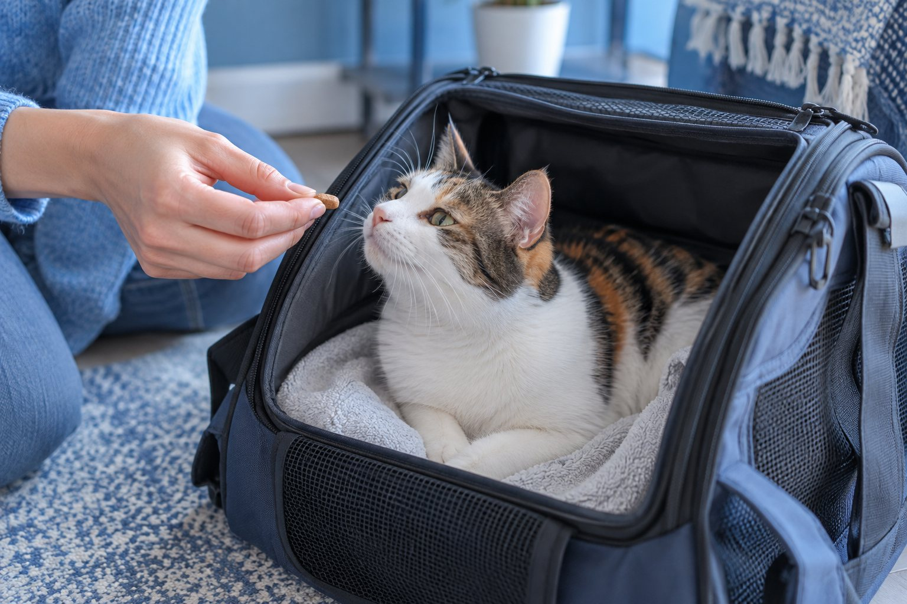

Keep a secure carrier accessible at home, add familiar bedding, reward voluntary exploration, and build from an open door to short closed-door sessions before a real journey.
A cat who sees a carrier only moments before a veterinary visit may have learned that the box predicts restraint and travel. The easiest time to change that association is on an ordinary day, when nothing urgent is happening. Carrier training is a series of small choices the cat can make, not a race to close the door.
Choose a carrier that supports calm handling
Look for a sturdy carrier that closes reliably and has enough space for your cat to stand, turn, and settle. A removable top can make a veterinary examination less stressful because a clinician may be able to assess a cat while it remains in the lower half. A secure door and strong handle matter more than a fashionable shape. Check that ventilation openings cannot catch a claw and that the base does not flex when lifted. Line the floor with a nonslip towel or washable mat so the cat does not slide in transit.
Put the carrier in a quiet room your cat already uses. Secure the door open or remove it during early practice so it cannot swing shut unexpectedly. Place familiar bedding inside rather than a heavily scented new blanket. Some cats like a towel draped over part of the carrier for cover; leave ventilation clear and let the cat choose whether to enter. Do not block an exit or put food deep inside if your cat must squeeze past people or other animals to reach it.
Consider the cat’s body and history. A large cat may need a wider opening; a cat with painful joints may prefer a low entrance and stable floor. If you have several cats, each should have a suitable carrier available rather than being forced to share one space during a stressful trip. Check carrier weight and your own ability to carry it safely. A carrier that feels awkward to you can tilt or bump against doors, which may make travel uncomfortable for the cat.
Clean an old carrier if it smells of a previous frightening event, then let it air out. Avoid strong perfumes or essential oils. A familiar towel from the cat’s resting area can make the space recognizable. If the carrier has cracks, a loose latch, or a door that opens when lifted, replace or repair it before practice. Training cannot overcome a box that feels unstable or unsafe.
Start with voluntary visits to the open carrier
For several days, leave the carrier in place without asking anything of your cat. Reward a look, a sniff, or a step toward it. Put a few treats or a small part of a normal meal near the entrance. Gradually move the reward inward only if the cat approaches freely. Some cats will nap inside once the carrier becomes ordinary furniture; others need many tiny sessions. Both are acceptable. The useful measure is a relaxed cat who returns by choice.
Avoid pushing the cat through the opening to show that it is safe. The cat may learn that approaching the carrier removes control, making the next attempt harder. Instead, sit at a comfortable distance and let the cat investigate. If the cat is not interested in food, try a favorite toy or place the carrier beside a usual resting spot. Keep sessions brief and stop before the cat becomes wary. A few voluntary steps count as progress.
Once the cat enters reliably, reward a moment of staying inside, then allow an easy exit. Add a predictable word or gentle cue if you like, but do not repeatedly call the cat in when you cannot reward. Practice at different times of day so the carrier does not become a signal that a vet trip is imminent. A secure carrier can remain accessible between sessions with the door fixed open and bedding inside.
Watch body language closely. A cat who eats but holds its body low, flattens its ears, or bolts immediately may be too close to its limit. Move the treats nearer the entrance and give the cat a longer break. A cat who stretches, sniffs, and leaves at a normal pace is likely more comfortable. Training should make choice and predictability available, even though actual travel will eventually require a closed carrier.

Add the door, movement, and short trips gradually
When the cat can relax inside, briefly touch the door without moving it and reward calm behavior. On later sessions, move the door a little, then close and open it immediately. Increase closed-door time in small steps. Stay nearby, speak normally, and reopen before the cat panics. If the cat paws frantically, cries intensely, or refuses to return on the next session, the step was too large. Go back to an easier version. A few seconds of success are more useful than a forced minute.
Next, practice lifting the carrier just an inch or two while supporting the base with your other hand. Set it down gently and reward. Build to a short walk across the room, then to the doorway or parked car. A stable base matters: carrying by the handle alone can make some carriers swing. Use the same careful lift you will use on travel day. Never open a carrier outdoors or in an unsecured car to comfort a frightened cat.
Introduce the car only after the cat is reasonably calm with home movement. Secure the carrier according to your vehicle and carrier instructions so it cannot slide. Try a brief stationary car visit before a very short drive. Keep the temperature comfortable and avoid loud music. Some cats become carsick even with careful training; ask your veterinarian about travel support rather than giving human medicine or withholding prescribed care on your own.
Imagine a cat who willingly walks into an open carrier but protests as soon as it is lifted. That is not a failed training plan. It tells you to work specifically on the lift: touch the handle, support the base, raise for a second, then put it down. Repeat with longer pauses between steps. Breaking the journey into separate skills helps you see what the cat finds difficult rather than treating the whole carrier as one problem.
A low-pressure carrier progression
- Open boxReward a look or voluntary step inside.
- Door movementClose and reopen for a second while the cat stays relaxed.
- LiftSupport the base and move only a short distance.
- TravelBuild from a parked car to a brief drive.
Prepare for a veterinary appointment
Before appointment day, check the latch, add clean familiar bedding, and place an absorbent layer beneath it if needed. Have the clinic’s address and travel time ready so you do not rush. If the cat has a known history of severe travel distress, contact the veterinary team in advance. They may advise a tailored plan, including whether medication prescribed specifically for that cat is appropriate. Do not try a new sedating product without their guidance.
Allow extra time to invite the cat into the carrier using the practiced routine. If an appointment is urgent and the cat will not enter, focus on safe containment rather than extending a stressful chase. A carrier with a removable top or wide opening may help; ask the clinic for handling advice if you are unsure. Never carry a cat loose in a car. During travel, keep the carrier closed and stable, and shield it from sudden visual movement if the cat seems more comfortable with a partial cover.
At the clinic, keep the carrier above floor level if there is a safe stable surface, and avoid placing it beside an unfamiliar dog. Follow staff directions about where to wait. Some practices can offer a quieter area. Tell the team what your cat finds difficult, whether it enters willingly at home, and whether the car ride caused vomiting or distress. This information can help the team plan a gentler examination and future visits.
After the visit, return the carrier to its familiar place rather than hiding it away. Wash soiled bedding and add a clean familiar item. Offer a normal resting option and give your cat space to settle. A few easy carrier visits over the next week help prevent the next appointment from being the only reason the box appears. The training is maintenance, not a one-time project.
Troubleshoot a cat who still avoids the carrier
If the cat will not approach, ask what changed. Has another pet begun resting near the entrance? Is the carrier in a noisy hallway? Does the door move unexpectedly? Change one factor at a time and return to a distance where the cat stays relaxed. You can reward simply looking toward the carrier before asking for a step closer. A cat with pain may avoid climbing into a high or narrow opening; discuss a sudden change in movement with a veterinarian.
Do not interpret hiding or refusal as stubbornness. The cat may remember an unpleasant trip, dislike the carrier texture, or feel unsafe in that room. Avoid grabbing the cat repeatedly to rehearse a forced entrance. Instead, make the carrier a reliable safe resting option between trips. A cardboard box can help some cats practice entering an enclosed space, but it is not a safe substitute for a secure travel carrier.
If home practice stalls for weeks, film a short session without cornering the cat and show it to your veterinary team or a qualified feline behavior professional. They can help identify the step that is too difficult and rule out pain or illness. When a medical visit cannot wait, ask the clinic for a practical plan rather than delaying care until training is perfect. Training reduces stress over time; it should never become a reason to postpone needed treatment.
Success may look quieter than you expect. A cat who enters voluntarily, remains settled for a short lift, and recovers normally after a trip has made meaningful progress even if it still vocalizes during travel. Keep the carrier sturdy, the routine predictable, and the steps small. Over time, a familiar box becomes a place the cat knows, rather than an object that appears only when control disappears.
If you own a soft-sided carrier, check whether its base stays level when carried and whether the mesh can be damaged by claws. A rigid carrier may be easier to clean after an accident and can offer a removable top, but the right choice depends on the cat and the journey. Place a familiar towel over a nonslip layer so the cat has a steady surface. Avoid piling bedding so high that the cat has little room to turn.
Practice with the person who will actually transport the cat. A cat may accept one family member’s quiet handling and worry when another moves quickly. Keep the approach consistent: the same invitation, the same careful base support, and a predictable pause before lifting. On travel day, take the carrier straight to a calm location rather than carrying it through a room full of dogs or household noise.
For a cat who is very fearful after past trips, ask the clinic whether a pre-visit plan is available. They can advise on timing, handling, and any prescription option appropriate to that cat. Do not use leftover medication from another animal or online sedatives. A professional plan and continued home training can work together; neither requires pretending that the cat should enjoy every car ride.
Continue exploring
For a broader routine, read How Often Should You Change Cat Litter?, Why Is My Cat Suddenly Hiding?, and How to Trim a Cat's Nails Without a Struggle.
Frequently Asked Questions
Should I leave the cat carrier out all the time?
If it is secure and the door cannot swing shut, leaving it open in a familiar room can help the cat treat it as ordinary furniture. Keep bedding clean and allow the cat to enter and leave freely.
What if I need the vet before training is finished?
Do not delay needed care. Ask the clinic for safe handling advice, use a secure carrier, and tell staff about your cat’s distress. Resume gradual practice after the visit.
Can I open the carrier in the car to calm my cat?
Keep it closed in the car. A loose frightened cat can interfere with driving or escape when a door opens. Stop safely and call your veterinarian if your cat appears unwell.
Editorial references
These resources informed the general guidance in this article. They do not replace advice tailored to your pet.
This guide offers general information. Your pet’s age, health, and history may call for a different plan. For medical concerns, ask your veterinarian.